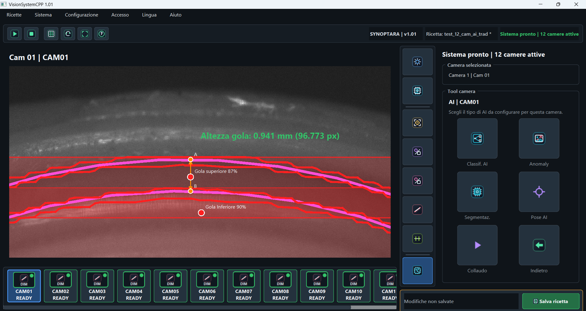

Segmentazione
Individua componenti, aree e profili complessi per i controlli successivi.
AI applicata
Modelli AI e algoritmi convenzionali collaborano nello stesso controllo, scelti in base ai campioni, alla variabilità e ai criteri di accettazione.
Valuta il tuo casoStrumenti integrati
L'AI non è una scatola magica: produce regioni e classificazioni che possono alimentare controlli geometrici e tolleranze esplicite.
Individua componenti, aree e profili complessi per i controlli successivi.
Assegna immagini o particolari a categorie definite.
Gestisce la variabilità dove una regola rigida non basta.
Usa le aree riconosciute come riferimenti; il valore finale resta deterministico.
Addestramento in postazione oppure offline su un altro computer.

Apri il risultato ↗Caso di collaudo
Il modello individua la regione di interesse; gli strumenti geometrici ricavano poi una misura confrontabile con tolleranze definite.
Leggi il report PDF